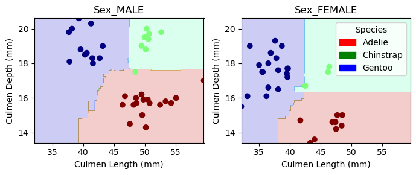

In this study, we apply machine learning techniques to classify three penguin species—Adelie, Chinstrap, and Gentoo—using the famous Palmer Penguins dataset. We preprocess the data by handling missing values and encoding categorical variables, then explored feature relationships through visualizations. Then, we find the three most effective features for a Random Forest classifier and trained it using selected features. We were able to achieve 99% accuracy on the test set. This underscores the effectiveness of the chosen features and model in accurately distinguishing between the penguin species.
Explore
Before we start exploring the data, we need to load in the Palmer’s Penguins Dataset and take a look at the data we are given.
import pandas as pdtrain_url ="https://raw.githubusercontent.com/PhilChodrow/ml-notes/main/data/palmer-penguins/train.csv"train = pd.read_csv(train_url)train.head()
studyName
Sample Number
Species
Region
Island
Stage
Individual ID
Clutch Completion
Date Egg
Culmen Length (mm)
Culmen Depth (mm)
Flipper Length (mm)
Body Mass (g)
Sex
Delta 15 N (o/oo)
Delta 13 C (o/oo)
Comments
0
PAL0809
31
Chinstrap penguin (Pygoscelis antarctica)
Anvers
Dream
Adult, 1 Egg Stage
N63A1
Yes
11/24/08
40.9
16.6
187.0
3200.0
FEMALE
9.08458
-24.54903
NaN
1
PAL0809
41
Chinstrap penguin (Pygoscelis antarctica)
Anvers
Dream
Adult, 1 Egg Stage
N74A1
Yes
11/24/08
49.0
19.5
210.0
3950.0
MALE
9.53262
-24.66867
NaN
2
PAL0708
4
Gentoo penguin (Pygoscelis papua)
Anvers
Biscoe
Adult, 1 Egg Stage
N32A2
Yes
11/27/07
50.0
15.2
218.0
5700.0
MALE
8.25540
-25.40075
NaN
3
PAL0708
15
Gentoo penguin (Pygoscelis papua)
Anvers
Biscoe
Adult, 1 Egg Stage
N38A1
Yes
12/3/07
45.8
14.6
210.0
4200.0
FEMALE
7.79958
-25.62618
NaN
4
PAL0809
34
Chinstrap penguin (Pygoscelis antarctica)
Anvers
Dream
Adult, 1 Egg Stage
N65A2
Yes
11/24/08
51.0
18.8
203.0
4100.0
MALE
9.23196
-24.17282
NaN
Now, we need to clean this data. First, we can see that there are some missing values. In this class, we haven’t learned how to impude the missing values yet, so I will just get rid of the rows that have N/A values. Then, I will use the provided code to “one-hot encode” the categorical features. These categorical columns should now be True/False rather than Yes/No.
Now, I am going to merge the our target column with our features into a new dataset so that I can create visualizations easier.
import pandas as pdimport seaborn as snsimport matplotlib.pyplot as pltdf = X_train.copy()df["Species"] = y_train.flatten().astype(int)fig, ax = plt.subplots(figsize=(6, 5))sns.scatterplot(data=df, x="Flipper Length (mm)", y="Body Mass (g)", hue="Species", style="Species", ax=ax)ax.set(title="Body Mass vs. Flipper Length by Species", xlabel="Flipper Length (mm)", ylabel="Body Mass (g)")handles, _ = ax.get_legend_handles_labels()ax.legend(handles, ["Adelie", "Chinstrap", "Gentoo"], title="Species")plt.tight_layout()plt.show()
This scatterplot shows the relationship between Flipper Length (mm) and Body Mass (g) by the three penguin species: Adelie, Chinstrap, and Gentoo. My first takeaway from this plot is that Gentoo penguins (represented by squares) have significantly higher higher body mass and longer flipper lengths than the other two species. Additionally, there is notable overlap between Adelie and Chinstrap penguins (represented by circles and X’s) in the middle of the graph. For a classification problem, this is a little alarming for me because this overlap suggests that Flipper Length and Body Mass alone won’t be able to reliably distinguish between Adelie and Chinstrap species. I may need to look for a different quantatative relationship to get to 100% accuracy.
# map to have species name on x-axis rather than 0,1,2map= {0: "Adelie", 1: "Chinstrap", 2: "Gentoo"}# Replace species numbers with namesdf["Species"] = df["Species"].map(map)fig, ax = plt.subplots(figsize=(6, 5))sns.boxplot(data=df, x="Species", y="Culmen Length (mm)", ax=ax)ax.set(title="Culmen Length by Species", xlabel="Species", ylabel="Culmen Length (mm)")plt.tight_layout()plt.show()
This boxplot illustrates the distribution of culmen length (mm) across the three penguin species. One observation is that Adelie penguins have the shortest culmen length by far. They have a median significantly lower than both Chinstrap and Gentoo penguins. Chinstrap penguins have the longest culmen length on average, with a higher IQR. Gentoo penguins tend to fall between the two but exhibit a slightly more compact distribution. This visualization reinforces the idea that culmen length could be a useful feature for distinguishing Adelie penguins from the other two species, but there may be some overlap between Chinstrap and Gentoo, so I’ll have to address this when I am searching for my 3 features.
# Create a new 'Sex' column based on one-hot encoding to make aggregating table easierdf["Sex"] = df["Sex_MALE"].map({True: "Male", False: "Female"})summary_table = df.groupby(["Species", "Sex"]).aggregate({"Culmen Length (mm)": ["mean", "std"],"Culmen Depth (mm)": ["mean", "std"],"Flipper Length (mm)": ["mean", "std"],"Body Mass (g)": ["mean", "std"]})summary_table
Culmen Length (mm)
Culmen Depth (mm)
Flipper Length (mm)
Body Mass (g)
mean
std
mean
std
mean
std
mean
std
Species
Sex
Adelie
Female
37.355769
1.896686
17.644231
0.928928
188.038462
5.423122
3353.365385
264.576467
Male
40.451786
2.449044
19.064286
1.048536
192.839286
6.893414
4066.071429
320.703367
Chinstrap
Female
46.722581
3.169933
17.612903
0.801558
192.064516
5.898788
3523.387097
294.953067
Male
51.312000
1.633840
19.256000
0.779466
200.480000
6.325346
4008.000000
375.951570
Gentoo
Female
45.455102
1.971787
14.210204
0.536674
212.836735
3.466187
4684.693878
297.463948
Male
49.046512
2.303760
15.741860
0.793495
221.186047
5.279141
5481.976744
302.830181
This table highlights consistent differences between male and female penguins across all three species, suggesting that sex could be a valuable feature for species classification. I noticed that male penguins tend to have larger body mass, culmen length, and flipper length compared to females within the same species. These differences are especially pronounced in Body Mass (g) and Flipper Length (mm), where males exhibit significantly higher mean values than females. Since the magnitude of these differences varies by species—for example, Gentoo males are much heavier than Chinstrap or Adelie. So maybe, sex in combination with other quantitative features, can help differentiate species. Given that some species, like Adelie and Chinstrap, show overlap in other features (like in the first graph), incorporating sex into the model may improve classification accuracy by providing an additional distinguishing factor.
Model
Now that I’ve done a little exploring of the data, it is time to determine which features will be predict the penguins in the “test” dataset. At a high level, I will iterate through every combination of 1 qualitative variable and 2 quantitative variables and use cross validation to determine which combination performs best within the training data.
import pandas as pdimport numpy as npfrom itertools import combinationsfrom sklearn.tree import DecisionTreeClassifierfrom sklearn.model_selection import cross_val_scorefrom sklearn.ensemble import RandomForestClassifierqualitative_features = ["Island_Biscoe", "Island_Dream", "Island_Torgersen", "Clutch Completion_No", "Clutch Completion_Yes", "Sex_FEMALE", "Sex_MALE"]quantitative_features = ["Culmen Length (mm)", "Culmen Depth (mm)", "Flipper Length (mm)", "Body Mass (g)"]best_features =Nonebest_score =0# Try combinations of 1 qualitative + 2 quantitative featuresfor qual in qualitative_features:for quant_combo in combinations(quantitative_features, 2): selected_features = [qual] +list(quant_combo)# Train a Random Forest RF = RandomForestClassifier(random_state=7) scores = cross_val_score(RF, X_train[selected_features], y_train, cv=5)# Compute mean accuracy mean_score = np.mean(scores)# Track the best feature combinationif mean_score > best_score: best_score = mean_score best_features = selected_features# Output the best feature set and corresponding accuracybest_features, best_score
In this block, I am trying all combnations of 1 qualitative and 2 quantiative features. For each combo, I am creating a Random Forest object (I chose lucky number 7 for reproducability) and using the cross_val_score function to see how the model does with these features. I am familiar with Random Forests from STAT0218 but I don’t remember how the hyperparameters work (like max_depth) so I didn’t tune those. I then took the vector of 5 cross-validation scores to gauge how each combination performed. I then updated the best score and selected features if they were the best so far. I found that the best three performing features were [‘Sex_MALE’, ‘Culmen Length (mm)’, ‘Culmen Depth (mm)’] which had an average accuracy of about 98% when I cross-validated. This is pretty in line with some of my findings from the explore phase.
Here, I fit a random forest using the training data and evaluation it on the unseen test data. I was able to get ~99% accuracy. Now, let’s take a look at the decision boundaries.
from matplotlib.patches import Patchfrom matplotlib import pyplot as pltimport numpy as npdef plot_regions(model, X, y): x0 = X[X.columns[0]] x1 = X[X.columns[1]] qual_features = X.columns[2:] fig, axarr = plt.subplots(1, len(qual_features), figsize = (7, 3))# create a grid grid_x = np.linspace(x0.min(),x0.max(),501) grid_y = np.linspace(x1.min(),x1.max(),501) xx, yy = np.meshgrid(grid_x, grid_y) XX = xx.ravel() YY = yy.ravel()for i inrange(len(qual_features)): XY = pd.DataFrame({ X.columns[0] : XX, X.columns[1] : YY })for j in qual_features: XY[j] =0 XY[qual_features[i]] =1 p = model.predict(XY) p = p.reshape(xx.shape)# use contour plot to visualize the predictions axarr[i].contourf(xx, yy, p, cmap ="jet", alpha =0.2, vmin =0, vmax =2) ix = X[qual_features[i]] ==1# plot the data axarr[i].scatter(x0[ix], x1[ix], c = y[ix], cmap ="jet", vmin =0, vmax =2) axarr[i].set(xlabel = X.columns[0], ylabel = X.columns[1], title = qual_features[i]) patches = []for color, spec inzip(["red", "green", "blue"], ["Adelie", "Chinstrap", "Gentoo"]): patches.append(Patch(color = color, label = spec)) plt.legend(title ="Species", handles = patches, loc ="best") plt.tight_layout()
I used the plot_regions() function that we were given to show how the training data looks with a Random Forest Model and the feaures Culmen Length, Culmen Depth, and Sex. The boundaries for a Random Forest are a little funky but we can see how effective this model and these features are for classifying the penguins. The blue (Gentoo), red (Adelie), and green (Chinstrap) regions show how the model segments the graph. I notice that Gentoo are in the upper left showing that culmen depth might be the primary classfying in distinguishing. For Chinstrap and Adelie there is slightly more overlap. Some Chinstrap points appear in the red region. This suggests that while culmen depth helps differentiate Gentoo penguins, it may not be as reliable in distinguishing Adelie and Chinstrap.
The decision boundaries for males and females have the same general shape, but are different. This indicates that sex influences the classification. The boundaries for Adelie and Chinstrap penguins appear more distinct in females than in males, which may imply that culmen depth differences between these two species are more pronounced in female penguins. This reinforces why “Sex_MALE” was selected as an important feature—it helps refine the classification process and improves separation between species.
plot_regions(RF, X_test[cols], y_test)

I used the plot_regions() function that we were given to show how the decision boundaries on the testing data with my RF model using the feaures Culmen Length, Culmen Depth, and Sex. This model achieved 67/68 accuracy on the test data, meaning that every penguin was correctly except for 1. You can see the one error in my model on the test data where the Chinstrap penguin is in the Adelie section.
The diagonal entires are the ones my model got correctly. The confusion matrix shows that the model performed well, correctly classifying 67 out of 68 test samples. The only misclassification occurred in the second row, where one Chinstrap penguin was mistakenly classified as Adelie. This suggests that while the model is effective, there may be some overlap in feature distributions between Chinstrap and Adelie, likely due to similarities in culmen depth or length.
Discussion
The successful classification of penguin species with perfect accuracy highlights the effectiveness of the Random Forest model and the feautres that were selected during this blog post. Notably, the inclusion of Sex as a feature proved crucial, as preliminary visualizations revealed overlapping measurements between Adelie and Chinstrap species in different features. Incorporating ‘Sex’ helped resolve this overlap, leading to clearer decision boundaries. This study demonstrates that through a clear classification pipeline, machine learning can effectively address classification problems in the real world.